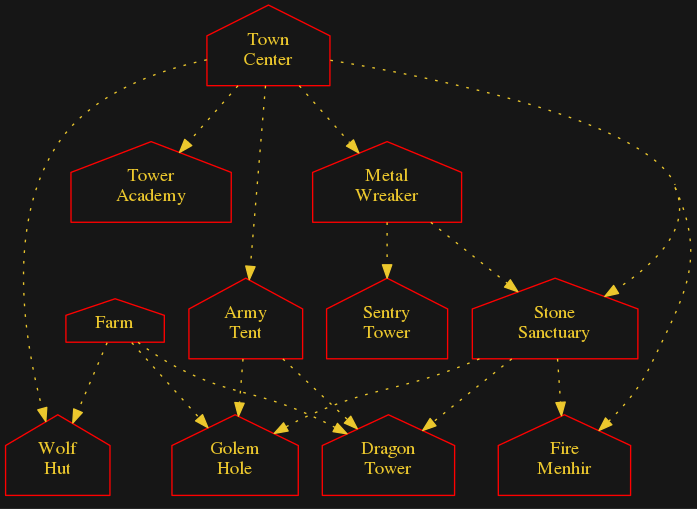

Clickable Techtree Diagram for Medieval - Buildings (Zetapack)
Choose faction: British | Egypt | Elves | Greece | Indian | Magic | Medieval | Norsemen | Persian | Romans | Tech
Techtree Diagrams: Buildings | Buildings Units | All

Arrow Styles:
- Bold: Unit creates building
- Solid: Building produces unit or upgrade
- Dashed: Units morphs/upgrades to other unit
- Dotted: Unit or Upgrade is a requirement